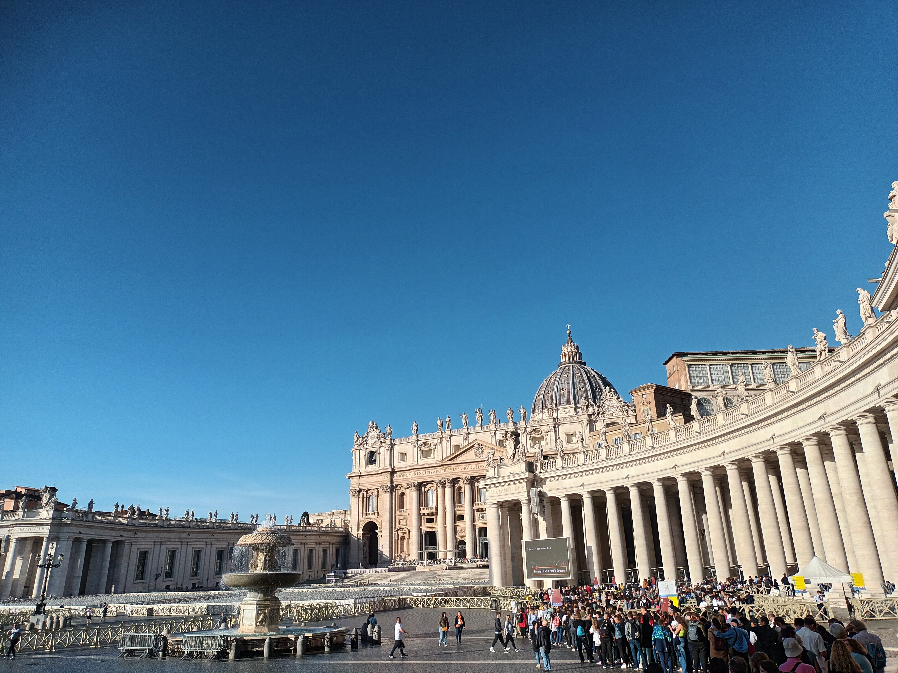
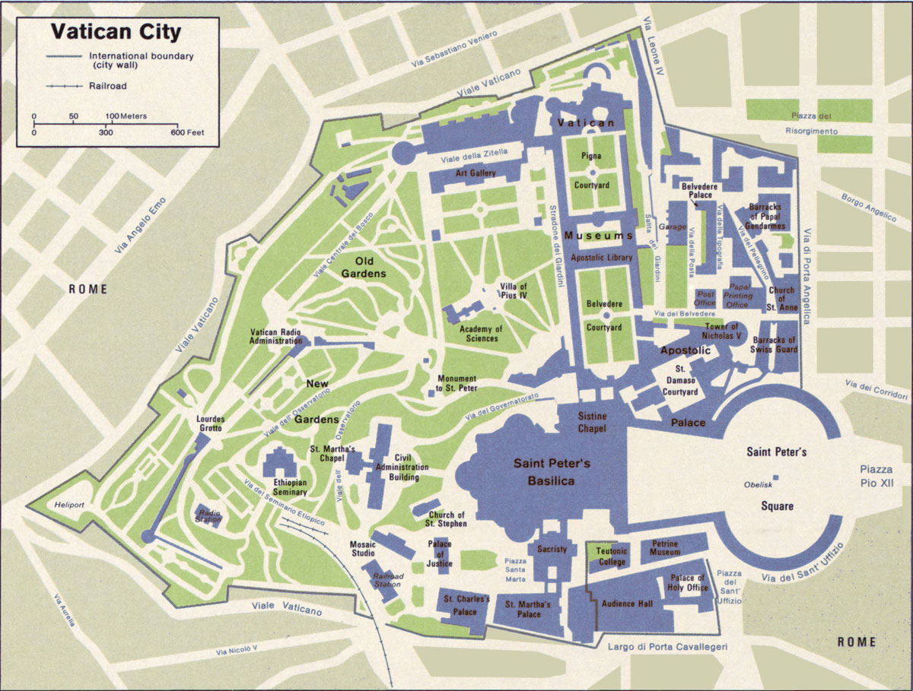

Tagasi

Vatikan on Roomas asuv merepiirita linnriik. Vatikan on väikseima pindala ja elanike arvuga riik maailmas.
Asustatud -- 11. veebruar 1929
Pealinn-Vatikan
Keel -- latina keel
Rahva arv -- 882
Linnad mida olen külastanud: Vatikan
Mida olen saavutanud selle reismisega:
Ajalugu õppinud:✅
Kohaliku toitu proovinud:❌
Kohaliku elamust proovinud:❌
